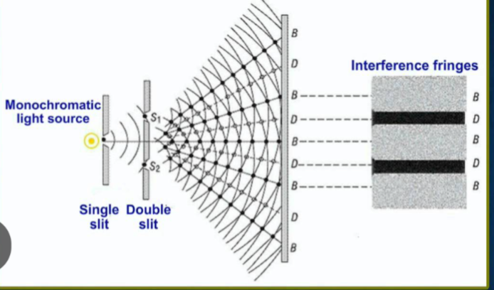

📘 Unit 6(e) - Wave Optics
Q: What are the various theories put forward to explain the nature of light?
The main theories that explain the nature of light are:
- Corpuscular theory
- Wave theory
- Electromagnetic theory
- Quantum theory
- Photon theory
- De Broglie's dual nature theory
Q: State Newton's corpuscular theory.
According to Newton —
- Light is made up of extremely tiny, hard, and spherical corpuscles.
- These corpuscles are emitted from a light source with a very high velocity.
- These corpuscles travel in a straight line.
- Corpuscles produce different colours by striking different media.
- On striking a mirror, the corpuscles bounce back, which causes reflection.
- On changing the medium, the speed of the corpuscles changes, which explains refraction.
Q: State the shortcomings of Newton's corpuscular theory.
- It could not explain wave phenomena such as interference, diffraction, and polarization.
- According to it, the speed of light increases in a denser medium, which is incorrect.
- It could not explain how corpuscles produce different colours.
Q: What is Huygens' wave theory? What are its shortcomings? (2021)
In the year 1678, the scientist Huygens propounded the wave theory related to the propagation of light. Its main postulates are as follows.
- Light is emitted from the source in the form of waves.
- These waves travel in all possible directions with a velocity of \(3 \times 10^8\) metre/second in an all-pervading hypothetical medium called ether.
- Initially, light waves were considered longitudinal, but later, to explain polarization, they were considered transverse.
- The wavelength of light of different colours is different.
Q: What is a wavefront? How many types are there?
The imaginary surface on which all points of a wave oscillate in the same phase is called a wavefront.
Types of wavefronts:
A wavefront is mainly of three types —
Types of wavefronts:
A wavefront is mainly of three types —
- Plane wavefront - When a wave comes from a source located very far away, its wavefronts are plane.
- Spherical wavefront - When a wave originates from a point source, all wavefronts are spherical.
- Cylindrical wavefront - When a wave originates from a linear source (such as a long slit), the wavefronts are cylindrical.


Q: Explain Huygens' principle of secondary wavelets. (2010/12/19/24 question bank)
The scientist Huygens propounded a principle regarding the propagation of waves, which is called Huygens' principle of secondary wavelets. Its main postulates are as follows-
- Every point on a wavefront acts as a source of waves, giving rise to new waves. These waves are called secondary wavelets.
- The secondary wavelets travel forward with the same velocity as the original wave.
- The envelope drawn tangential (outward) to these secondary wavelets at any instant represents the position of the new wavefront at that instant.
Q: State the principle of superposition of light waves. (question bank)
According to the principle of superposition of light waves, when two or more waves arrive simultaneously at a point in a medium, the resultant displacement at that point is equal to the vector sum of the individual displacements due to each wave.
If \(n\) waves arrive simultaneously at a point, and the displacement of this point due to each wave is \(y_1,y_2,y_3......y_n\) respectively, then by the principle of superposition, the resultant displacement \(y\) of this point will be as follows.
If \(n\) waves arrive simultaneously at a point, and the displacement of this point due to each wave is \(y_1,y_2,y_3......y_n\) respectively, then by the principle of superposition, the resultant displacement \(y\) of this point will be as follows.
$$
y = y_1 + y_2 + y_3 +......+ y_n
$$
Q: What do you understand by interference of light? How many types are there? (2022/23)
When two light waves of nearly equal amplitude and equal frequency travel simultaneously in the same direction in a medium, then, as a result of their superposition, the intensity of light at different points of the medium is different — this phenomenon is called interference of light.
Interference is of the following two types.
(1) Constructive interference - When two light waves meet at a point in the same phase, their resultant intensity and amplitude become maximum. Such interference is called constructive interference.
 If the individual amplitudes of the interfering waves are \(a_1\) and \(a_2\) respectively, then in the condition of constructive interference, their resultant amplitude is as follows.
If the individual amplitudes of the interfering waves are \(a_1\) and \(a_2\) respectively, then in the condition of constructive interference, their resultant amplitude is as follows.
 If the individual amplitudes of the interfering waves are \(a_1\) and \(a_2\) respectively, then in the condition of destructive interference, their resultant amplitude is as follows.
If the individual amplitudes of the interfering waves are \(a_1\) and \(a_2\) respectively, then in the condition of destructive interference, their resultant amplitude is as follows.
Interference is of the following two types.
(1) Constructive interference - When two light waves meet at a point in the same phase, their resultant intensity and amplitude become maximum. Such interference is called constructive interference.
$$
A = a_1 + a_2
$$
Condition -
- Both waves must be in the same phase.
- The frequencies of both the superposing waves must be equal.
- If the waves are polarized, then the planes of polarization of both must be the same.
$$
A = a_1 - a_2
$$
Condition - Both waves must be in opposite phase.
Q: Explain that the phenomenon of interference conforms to the law of conservation of energy. Or, in the interference of two waves, the energy at some points becomes zero. Is this energy destroyed?
In the phenomenon of interference, the total energy of the interfering waves remains constant. Only redistribution of energy takes place. Whatever energy disappears at the point of minimum intensity, an equal amount of extra energy appears at the point of maximum intensity. Hence, the phenomenon of interference conforms to the law of conservation of energy.
Q: Explain Young's double-slit experiment for the interference of light.
Experimental arrangement -
Method -
- A monochromatic light source is placed in front of a narrow aperture S so that the light becomes uniform (coherent).
- Light rays coming out of S fall on two very narrow parallel slits \(S_1\) and \(S_2\).
- Light waves emerging from these slits proceed further and reach a screen.
- An interference pattern of bright and dark fringes is obtained on the screen.

- Rays coming out of the light source first pass through a single aperture and then reach the two slits.
- Both slits act as secondary coherent sources of light waves.
- These waves superpose upon each other and meet at different points on the screen.
- Where the two waves meet in the same phase, bright fringes are formed.
- Where the two waves meet in opposite phase, dark fringes are formed.
- A regular arrangement of bright and dark fringes is formed on the screen, which is called the interference pattern.
Q: Derive the formula for the distances of the n-th bright and dark fringes from the central bright fringe in Young's double-slit experiment.

If point P is not very far from point O, then
$$
S_1P \approx S_2P \approx D
$$
$$
\therefore\ S_2P + S_1P \approx D + D = 2D
$$
Now, in the right triangle \(\triangle S_2PN\), by the Pythagoras theorem-
$$
S_2P^2 = S_2N^2 + NP^2
$$
$$
S_2P^2 = D^2 + \left(x_n + \frac{d}{2}\right)^2 \quad ....(1)
$$
Similarly, in the right triangle \(\triangle S_1PM\), by the Pythagoras theorem-
$$
S_1P^2 = S_1M^2 + MP^2
$$
$$
S_1P^2 = D^2 + \left(x_n - \frac{d}{2}\right)^2 \quad ....(2)
$$
Subtracting equation (2) from (1)
$$
S_2P^2 - S_1P^2 = \left(x_n + \frac{d}{2}\right)^2 - \left(x_n - \frac{d}{2}\right)^2
$$
$$
(S_2P - S_1P)(S_2P + S_1P) = 2x_nd
$$
$$
(S_2P - S_1P)(2D) = 2x_nd
$$
$$
S_2P - S_1P = \frac{x_nd}{D}
$$
Let \(\Delta\) be the path difference between the waves reaching point P from sources \(S_1\) and \(S_2\), then
$$
\Delta = S_2P - S_1P
$$
$$
\Delta = \frac{x_nd}{D}
$$
- Constructive interference - In this, the n-th bright fringe is formed at point P, so the path difference
$$ \Delta = n\lambda $$$$ \frac{x_nd}{D} = n\lambda $$$$ x_n = \frac{n\lambda D}{d} $$
- Destructive interference - In this, the n-th dark fringe is formed at point P, so the path difference
$$ \Delta = \frac{(2n+1)\lambda}{2} $$$$ \frac{x_nd}{D} = \frac{(2n+1)\lambda}{2} $$$$ x_n = \frac{(2n+1)\lambda D}{2d} $$
Q: What is fringe width in Young's double-slit experiment? Derive the formula for it.
In the phenomenon of interference of light waves, the distance between two consecutive bright fringes, or between two consecutive dark fringes, is called the fringe width. It is denoted by \(\beta\).
Derivation of formula -
Distance of the n-th bright fringe from the central bright fringe
Derivation of formula -
Distance of the n-th bright fringe from the central bright fringe
$$
x_n = \frac{n\lambda D}{d}
$$
Distance of the (n-1)-th bright fringe from the central bright fringe
$$
x_{(n-1)} = \frac{(n-1)\lambda D}{d}
$$
Hence, the fringe width
$$
\beta = x_{(n-1)} - x_n
$$
$$
\beta = \frac{n\lambda D}{d} - \frac{(n-1)\lambda D}{d}
$$
$$
\beta = \frac{[n-(n-1)]\lambda D}{d}
$$
$$
\beta = \frac{[n-n+1]\lambda D}{d}
$$
$$
\boxed{\beta = \frac{\lambda D}{d}}
$$
Q: Write the formula for fringe width in Young's double-slit experiment and state the factors affecting it. (2020/22 supplementary)
Formula for fringe width:
$$
\beta = \frac{\lambda D}{d}
$$
Here
- \(\beta\) = fringe width
- \(\lambda\) = wavelength of light
- \(D\) = distance from the screen
- \(d\) = distance between the two slits
- The fringe width is directly proportional to the wavelength of light. That is, \(\beta \propto \lambda\)
- The fringe width is directly proportional to the distance \(D\) of the screen from the source. That is, \(\beta \propto D\)
- The fringe width is inversely proportional to the distance 2d between the two wave sources. That is, \(\beta \propto \dfrac{1}{d}\)
Q: In Young's double-slit experiment, if the wavelength of the monochromatic light is increased, what effect will it have on the fringe width?
Formula for fringe width:
$$
\beta = \frac{\lambda D}{d}
$$
That is, the fringe width is directly proportional to the wavelength of light. Hence, if the wavelength of light is increased, the value of the fringe width will increase.
Q: If the apparatus of Young's double-slit experiment is immersed in water, what effect will it have on the fringe width?
Formula for fringe width:
$$
\beta = \frac{\lambda D}{d}
$$
That is, the fringe width is directly proportional to the wavelength of light. Since the wavelength of light decreases in water, the fringe width will decrease.
Q: In Young's double-slit experiment, if the screen is moved away from the slits, what effect will it have?
Formula for fringe width:
$$
\beta = \frac{\lambda D}{d}
$$
That is, the fringe width is directly proportional to the distance \(D\) of the screen from the source. Hence, on moving the screen away from the slits, the fringe width will increase.
Q: If the distance between the coherent light sources is decreased, what effect will it have on the fringe width?
Formula for fringe width:
$$
\beta = \frac{\lambda D}{d}
$$
That is, the fringe width is inversely proportional to the distance 2d between the two wave sources. Hence, if the distance between the coherent light sources is decreased, the fringe width will increase.
Q: In Young's double-slit experiment, if the distance between the slits is doubled and the distance between the slits and the screen is kept half, what will happen to the fringe width?
Formula for fringe width:
$$
\beta = \frac{\lambda D}{d}
$$
If the distance between the slits is doubled and the distance between the slits and the screen is kept half, then
$$
\beta' = \frac{\lambda \left(\dfrac{D}{2}\right)}{2d}
$$
$$
\beta' = \frac{1}{4}\left(\frac{\lambda D}{d}\right)
$$
$$
\boxed{\beta' = \frac{1}{4}\beta}
$$
Q: What effect will be seen on the interference pattern in Young's double-slit experiment if one slit is closed?
The interference pattern will not be obtained.
Q: What is the shape of the interference fringes in Young's double-slit experiment?
The interference fringes obtained in Young's double-slit experiment are like straight lines parallel to one another. They are parallel to the slits and are alternately bright and dark.
Q: State four essential conditions for the interference of light. (2015/21)
The essential conditions for the interference of light are as follows.
- The frequencies of both waves must be equal.
- The amplitudes of both waves must be nearly equal.
- Both waves must travel in the same direction.
- Both sources must be close to each other.
- Both light sources must be extremely narrow.
- The phase difference of the waves must be constant.
- The light sources must be monochromatic.
- If the light waves are polarized, their planes of polarization must be the same.
Q: What is a coherent source? State two conditions for two sources to be coherent. (2009/17 question bank)
Two light sources whose frequency is the same and whose phase difference remains constant are called coherent sources.
Conditions -
Conditions -
- The frequency must be the same.
- The phase difference must remain constant.
Q: How can coherent waves be obtained?
To obtain coherent waves, two light sources are obtained from a single light source by various methods (such as Fresnel's biprism method, Lloyd's mirror method, amplitude-splitting method, etc.).
Q: Can two independent sources of light produce interference?
The phase difference between light waves coming from two independent sources keeps changing with time. Hence, two independent sources of light cannot produce interference.
Q: When an airplane flying at a low altitude passes overhead, we sometimes find the picture on a television screen shaking. Why? (question bank)
An airplane flying at a low altitude reflects the T.V. signal. Hence, due to interference between the directly arriving signal and the reflected signal, the picture on the T.V. screen appears to shake.
Q: Can interference be obtained with white light?
Yes. White light consists of seven colours. The position of the central bright fringe is the same for all colours. Hence, the central fringe is white. The positions of the other bright fringes are different for different colours.
Q: When white light is incident on a thin film of a soap bubble, or on a thin film of oil on the surface of water, beautiful colours are seen. Explain the reason. Or, a soap bubble appears coloured. Explain the reason.
When sunlight is incident on a thin film (whose thickness is of the order of the wavelength of light), a part of it is reflected from the upper surface of the film, and the remaining part enters it and is reflected from the lower surface. Interference occurs between these light waves reflected from the two surfaces. Since white light is composed of seven colours, the film appears coloured due to the interference of the reflected waves.
Q: What do you understand by diffraction of light? (2021) Or, what is diffraction of light?
The phenomenon of bending of light waves at the sharp edge of an obstacle or aperture is called diffraction.
 Condition - The necessary condition for diffraction is that the size of the obstacle should be of the order of the wavelength of light.
Condition - The necessary condition for diffraction is that the size of the obstacle should be of the order of the wavelength of light.
Q: On which factors does diffraction depend?
Diffraction depends on two factors-
- Size of the aperture
- Wavelength
Q: Why is it easier to demonstrate the phenomenon of diffraction in sound waves than in light waves?
The wavelength of sound is of the order of the obstacles that come in its path, whereas generally the wavelength of light is not of the order of the obstacles that come in its path. Hence, it is easier to demonstrate the phenomenon of diffraction in sound waves than in light waves.
Q: Persons standing on either side of a tall obstacle cannot see each other but can hear each other's voice. Why? (NCERT)
For diffraction of waves, it is necessary that the size of the obstacle be of the order of the wavelength of the wave. The wavelength of sound is of the order of the size of the obstacle. Hence, sound waves get diffracted and reach the persons, and they are able to hear each other's voice.
The wavelength of light is very small, while the aperture of the obstacle is very large; hence, light waves cannot get diffracted. As a result, they are not able to see each other.
The wavelength of light is very small, while the aperture of the obstacle is very large; hence, light waves cannot get diffracted. As a result, they are not able to see each other.
Q: When a small circular obstacle is placed in the path of light coming from a distance, a bright spot is seen at the centre of the shadow of the obstacle. Why? (NCERT)
When a small circular obstacle is placed in the path of light coming from a distance, diffraction of light takes place at its edge. The diffracted waves produce constructive interference at the centre of the shadow, hence a bright spot is seen at the centre.
Q: How many types of diffraction are there? Give examples of each.
Diffraction is of two types.
- Fresnel diffraction - An example of Fresnel diffraction is diffraction by a straight edge.
- Fraunhofer diffraction - An example of Fraunhofer diffraction is diffraction by a single slit.
Q: State the differences between interference and diffraction.
| Interference | Diffraction |
|---|---|
| It is produced by the superposition of two or more waves. | It is produced when a wave bends around an obstacle or a narrow aperture. |
| It requires two sources. | It is possible with a single aperture or edge. |
| Its fringes are regular and equally spaced. | Its fringes are irregular. The central fringe is wide. |
| Its intensity depends on the phase difference. | Its intensity depends on the width of the aperture and \(\lambda\). |
Q: What is meant by polarization of light? State its condition.
When the oscillations of transverse light waves are confined to only one plane perpendicular to the direction of wave propagation, this process is called polarization of light.
Condition for polarization of light - Polarization of light is possible only when the light wave is transverse.
Condition for polarization of light - Polarization of light is possible only when the light wave is transverse.
Q: In which type of wave does the phenomenon of polarization not occur?
The phenomenon of polarization does not occur in longitudinal waves.
Q: Polarization does not occur in longitudinal waves. Why?
In longitudinal waves, the particles of the medium oscillate in the same direction as the propagation of the wave; hence, polarization does not occur in longitudinal waves.
Q: Light waves can be polarized, but sound waves cannot. Why?
The phenomenon of polarization is possible only in transverse waves. Light waves are transverse, and sound waves are longitudinal waves. Hence, light waves can be polarized, but sound waves cannot.
Q: Among X-rays, sound waves, and radio waves, in which waves is polarization possible, and why?
Polarization is possible in X-rays and radio waves, because both of these are transverse waves. Polarization is not possible in sound waves because they are longitudinal waves.
Q: What is meant by the plane of vibration and the plane of polarization?
- Plane of vibration - When light is polarized, the plane in which the oscillations of the light wave occur is called the plane of vibration.
- Plane of polarization - The plane in which there is no oscillation, but only the propagation of light, is called the plane of polarization. It is perpendicular (90°) to the plane of vibration.

Q: What is meant by unpolarized light and polarized light?
- Unpolarized light - When the oscillations of a light wave occur in all possible directions perpendicular to the direction of propagation of light, such light is called unpolarized light.
Example: Light emitted from the sun, a bulb, a tube light, etc. is unpolarized. - Polarized light - When the oscillations of a light wave are confined to only one plane perpendicular to the direction of propagation of light, such light is called polarized light.
Example: Light emitted from a Polaroid sheet is polarized.

Q: State the differences between unpolarized light and polarized light.
| Unpolarized light | Polarized light |
|---|---|
| Oscillations occur in all possible directions. | Oscillations occur in only one plane. |
| Generally obtained from natural or ordinary sources. | Obtained by an artificial process (such as a Polaroid). |
| Its intensity is uniformly distributed. | Since the oscillations are restricted, the intensity depends on the direction. |
Q: What is a Polaroid?
A Polaroid is a simple and inexpensive device for producing plane-polarized light.
Q: What is a Polaroid? Describe its construction and working.
A simple and inexpensive device that produces plane-polarized light is called a Polaroid.
Construction - It consists of a film that is placed between two glass plates. To make this film, extremely small crystals of iodoquinine sulphate are spread on a thin sheet of nitrocellulose in such a way that the axes of all the crystals remain parallel to one another.
 Working - When ordinary light is incident on a Polaroid, only those electric vectors whose vibrations are parallel to the axis of the crystals are able to pass out of the Polaroid. Thus, the light emerging from the Polaroid is plane-polarized light.
Working - When ordinary light is incident on a Polaroid, only those electric vectors whose vibrations are parallel to the axis of the crystals are able to pass out of the Polaroid. Thus, the light emerging from the Polaroid is plane-polarized light.
When two Polaroids are parallel to each other, the light emerging from the first Polaroid (called the polarizer) also emerges from the second Polaroid (called the analyzer). But when they are perpendicular to each other, the light emerging from the first Polaroid is blocked by the second Polaroid. As a result, the intensity of the emergent light is zero. In this condition, the two Polaroids are said to be crossed.

Construction - It consists of a film that is placed between two glass plates. To make this film, extremely small crystals of iodoquinine sulphate are spread on a thin sheet of nitrocellulose in such a way that the axes of all the crystals remain parallel to one another.
When two Polaroids are parallel to each other, the light emerging from the first Polaroid (called the polarizer) also emerges from the second Polaroid (called the analyzer). But when they are perpendicular to each other, the light emerging from the first Polaroid is blocked by the second Polaroid. As a result, the intensity of the emergent light is zero. In this condition, the two Polaroids are said to be crossed.
Q: For which arrangement of the polarizer and analyzer, in the analysis of polarized light, is the intensity of light minimum?
When the axes of the polarizer and analyzer are mutually perpendicular.
Q: What is meant by crossed Polaroids?
Two Polaroids whose transmission axes are mutually perpendicular are called crossed Polaroids.
Q: How will you obtain plane-polarized light from a Polaroid?
Ordinary light coming directly from a light source is first made incident on a Polaroid. The light that emerges from the Polaroid is plane-polarized light.
Q: How will you distinguish between plane-polarized light and unpolarized light?
To identify whether light is polarized or unpolarized, the light is first made incident on a Polaroid. If, on rotating the Polaroid, there is a change in the intensity of the light emerging from it, then the light incident on the Polaroid is polarized light; and if there is no change in the intensity of the emergent light, then the light incident on the Polaroid is unpolarized light.
Q: Why are sunglasses made of Polaroid more useful than those made of coloured glass?
Light reflected from objects is partially plane-polarized. A Polaroid cuts off the horizontal vibrations of the partially polarized light. As a result, the glare of light is eliminated. Sunglasses made of coloured glass are not able to remove the glare of light.
Q: State four uses of Polaroids in daily life.
The uses of Polaroids are as follows.
- In sunglasses to remove the glare of light.
- In controlling the intensity of light entering motor cars, aeroplanes, trains, etc.
- In viewing three-dimensional pictures.
- In studying the optical properties of metals.
Q: Why does polarization occur due to scattering? Explain.
It has been found that sunlight gets scattered by the molecules of the atmosphere. Due to this scattering, sunlight becomes polarized.
Polarization due to scattering can be explained as follows-
Polarization by scattering of incident light by a nitrogen molecule in two perpendicular directions has been shown. The incident light is unpolarized light, in which the electric vector can vibrate in every possible direction in the plane perpendicular to the incident light. All these vibrations can be resolved into two rectangular components.
The vibrations parallel to the plane of the paper are along the line of sight of the observer. Hence, these vibrations cannot produce a transverse wave in the direction of the observer. Thus, the light entering the observer's eye is plane-polarized, with its vibrations perpendicular to the plane of the paper.
Polarization due to scattering can be explained as follows-
Polarization by scattering of incident light by a nitrogen molecule in two perpendicular directions has been shown. The incident light is unpolarized light, in which the electric vector can vibrate in every possible direction in the plane perpendicular to the incident light. All these vibrations can be resolved into two rectangular components.
- Those parallel to the plane of the paper are represented by an arrowed line.
- Those perpendicular to the plane of the paper are represented by dots.
The vibrations parallel to the plane of the paper are along the line of sight of the observer. Hence, these vibrations cannot produce a transverse wave in the direction of the observer. Thus, the light entering the observer's eye is plane-polarized, with its vibrations perpendicular to the plane of the paper.
Q: What is meant by the angle of polarization or Brewster's angle?
When unpolarized light incident on the surface of a transparent medium is made incident at a particular angle, the reflected light becomes completely polarized. This particular angle is called the angle of polarization. It is denoted by \(i_p\).

Q: What is Brewster's law?
Brewster's law - According to this law, the refractive index of a medium is equal to the tangent of the angle of polarization.
That is
That is
$$
\tan i_p = \mu
$$
Here
- \(i_p\) = angle of polarization
- \(\mu\) = refractive index of the medium
Q: Prove that when light is incident at the angle of polarization, the reflected ray and the refracted ray are mutually perpendicular.
Then, according to Snell's law,
$$
\frac{\sin i_p}{\sin r} = \mu \quad ....(1)
$$
According to Brewster's law
$$
\tan i_p = \mu \quad ....(2)
$$
From equations (1) and (2) -
$$
\tan i_p = \frac{\sin i_p}{\sin r}
$$
$$
\frac{\sin i_p}{\cos i_p} = \frac{\sin i_p}{\sin r}
$$
$$
\frac{1}{\cos i_p} = \frac{1}{\sin r}
$$
$$
\sin r = \cos i_p
$$
$$
\sin r = \sin\left(\frac{\pi}{2} - i_p\right)
$$
$$
r = \frac{\pi}{2} - i_p
$$
$$
i_p + r = \frac{\pi}{2}
$$
The angle between the reflected ray and the refracted ray
$$
\angle BCD = \pi - (i_p + r)
$$
$$
\angle BCD = \pi - \frac{\pi}{2}
$$
$$
\boxed{\angle BCD = \frac{\pi}{2}}
$$
Hence, when light is incident at the angle of polarization, the reflected ray and the refracted ray are mutually perpendicular.
Q: State Malus's law. (2025)
According to Malus's law, "when polarized light is passed through a polarizer, the intensity of the light is proportional to the square of the cosine of the angle between the axis of the polarizer and the direction of polarization of the light."
That is
That is
$$
I \propto \cos^2\theta
$$
Q: How is the phenomenon of polarization different from the phenomena of interference and diffraction?
The phenomena of interference and diffraction are possible in both transverse and longitudinal waves, whereas the phenomenon of polarization is possible only in transverse waves, not in longitudinal waves.